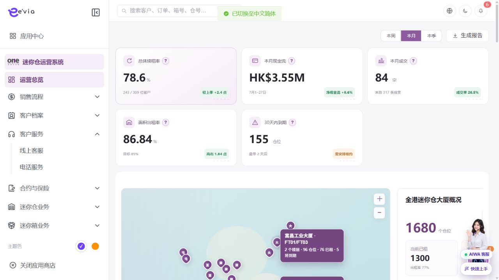

PRODUCT REQUIREMENTS
总纲与研发分工 PRD
下载 Word 文档总纲与研发分工 PRD
运营后台详细需求基线 V2.0
1.1 原型界面依据
以下截图直接取自 AiwaBot产品原型-v3.2.html，用于核对页面布局、入口、字段和操作位置。

单模块最低内容标准
| 章节 | 最低要求 |
|---|---|
| 列表字段 | 字段、来源、展示、排序、跳转和脱敏 |
| 新增编辑 | 控件、必填、格式、关联和跨字段校验 |
| 操作流程 | 入口、前置、步骤、事务、副作用和失败 |
| 业务流程 | 状态机、BPMN、异常和补偿 |
| 跨端规则 | 客户小程序、工单小程序、AIWA和第三方 |
| 研发验收 | 接口、事件、权限、幂等、并发和测试 |
模块拆分
| 序号 | 模块 | 分类 |
|---|---|---|
| 01 | 运营总览 PRD | 运营与销售 |
| 02 | 线索池 PRD | 运营与销售 |
| 03 | 预约管理 PRD | 运营与销售 |
| 04 | 销售机会 PRD | 运营与销售 |
| 05 | 订单中心 PRD | 交易与客户 |
| 06 | 合同签约 PRD | 交易与客户 |
| 07 | 保险产品管理 PRD | 交易与客户 |
| 08 | 保单管理 PRD | 交易与客户 |
| 09 | 收款与付款凭证 PRD | 交易与客户 |
| 10 | 客户档案 PRD | 交易与客户 |
| 11 | 客户分析 PRD | 交易与客户 |
| 12 | 店铺管理 PRD | 门店与仓储 |
| 13 | 迷你仓空间管理 PRD | 门店与仓储 |
| 14 | 续租管理 PRD | 门店与仓储 |
| 15 | 退租管理 PRD | 门店与仓储 |
| 16 | 转仓管理 PRD | 门店与仓储 |
| 17 | 迷你箱资产管理 PRD | 迷你箱与商品 |
| 18 | 迷你箱配对 PRD | 迷你箱与商品 |
| 19 | 迷你箱物流履约 PRD | 迷你箱与商品 |
| 20 | 迷你箱套餐管理 PRD | 迷你箱与商品 |
| 21 | 衍生商品管理 PRD | 迷你箱与商品 |
| 22 | 工单分析 PRD | 工单与营销 |
| 23 | 工单中心 PRD | 工单与营销 |
| 24 | 营销活动管理 PRD | 工单与营销 |
| 25 | 优惠券管理 PRD | 工单与营销 |
| 26 | 推荐码管理 PRD | 工单与营销 |
| 27 | 团队管理 PRD | 组织与权限 |
| 28 | 用户管理 PRD | 组织与权限 |
| 29 | 角色与权限 PRD | 组织与权限 |
| 30 | 操作审计 PRD | 组织与权限 |
| 31 | 跨端API契约 PRD | 平台能力 |
| 32 | 领域事件总线 PRD | 平台能力 |
| 33 | 通知中心 PRD | 平台能力 |
| 34 | 数据迁移 PRD | 平台能力 |
| 35 | 系统监控与运维 PRD | 平台能力 |
统一验收门槛
•
字段字典与页面、接口和导出一致
•
状态动作具备权限、前置状态、幂等和审计测试
•
跨端编号、状态、金额和时间一致
•
BPMN节点映射到动作、负责人和事件
•
P0完成自动化测试和UAT